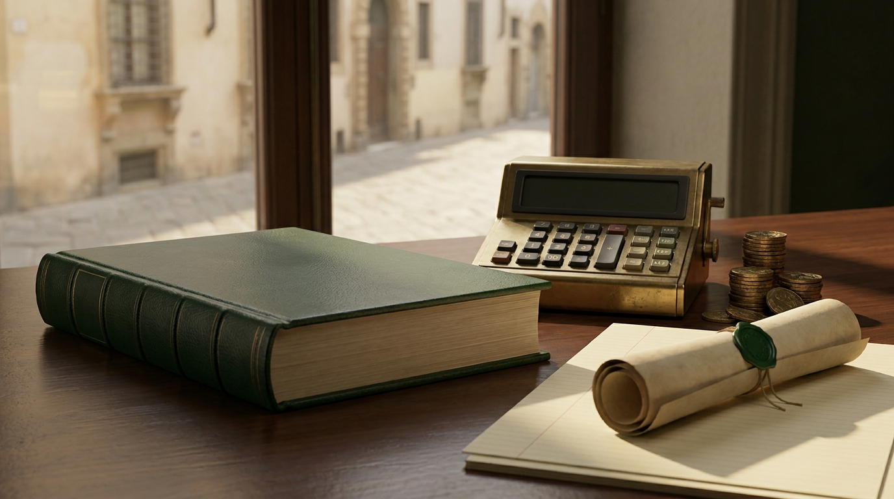

Spese legali dopo una causa persa dal condominio: chi le recupera dai morosi
Quando il condominio perde una causa, il giudice condanna l'ente a pagare le spese legali della controparte. Ma se uno o più condòmini non versano la propria quota, chi recupera quelle somme? La legge assegna un ruolo preciso all'amministratore e relega il creditore esterno a un'azione solo residuale. Vediamo come funziona il meccanismo.

Il problema: una condanna alle spese e qualche moroso
Il condominio agisce in giudizio, oppure viene citato, e perde. Il giudice lo condanna a rifondere le spese legali alla controparte vittoriosa. A questo punto la spesa va ripartita tra tutti i condòmini secondo le rispettive quote millesimali.
Il nodo sorge quando alcuni condòmini non pagano. Il creditore esterno — chi ha vinto la causa — pretende il proprio denaro, ma deve sapere a chi rivolgersi e in che ordine. E l'amministratore deve sapere cosa è tenuto a fare per non rispondere in proprio.
Inquadramento normativo
Il perno è l'art. 63 disp. att. cod. civ., secondo cui chi vanta un credito verso il condominio può agire contro i condòmini in regola con i pagamenti solo dopo aver tentato l'escussione (cioè l'aggressione del patrimonio) dei condòmini morosi. È il principio della parziarietà dell'obbligazione condominiale: ciascun condòmino risponde nei limiti della propria quota, non per l'intero debito.
Il creditore esterno, quindi, non può scegliere liberamente di colpire il condòmino più solvibile. Deve prima rivolgersi ai morosi. Per ottenerne i nominativi, l'amministratore è obbligato a comunicarli.
A monte operano l'art. 1129 cod. civ., che disciplina i doveri e la responsabilità dell'amministratore, e l'art. 1130 cod. civ., che ne elenca le attribuzioni. Tra queste rientra la riscossione dei contributi e l'esecuzione delle delibere assembleari, comprese quelle che approvano il riparto delle spese di lite.
Implicazioni pratiche
Il meccanismo si articola su due piani.
Sul piano interno, l'amministratore deve attivarsi per recuperare le quote dai condòmini morosi. Lo strumento tipico è il decreto ingiuntivo immediatamente esecutivo previsto dall'art. 63 disp. att. cod. civ.: l'amministratore, sulla base dello stato di ripartizione approvato dall'assemblea, può ottenere dal giudice un titolo per agire contro il singolo moroso senza attendere i tempi ordinari.
Non è una facoltà discrezionale. L'art. 1129 cod. civ. impone all'amministratore di agire per la riscossione entro tempi ragionevoli, salvo diversa e motivata deliberazione assembleare. L'inerzia può esporlo a responsabilità verso il condominio e costituire causa di revoca.
Sul piano esterno, il creditore vittorioso non può saltare questo passaggio. Solo dopo aver tentato senza successo di recuperare dai morosi può rivolgersi ai condòmini in regola, e comunque nei limiti delle rispettive quote. È un'azione residuale, non alternativa.
Per il condòmino che ha già pagato la propria parte, la conseguenza è rilevante: non può essere chiamato a coprire la quota del vicino moroso, salvo l'escussione residuale prevista dalla norma e sempre nei limiti millesimali.
Cosa fare in concreto
- Amministratori: predisponete tempestivamente lo stato di ripartizione delle spese di lite e portatelo in approvazione assembleare; è la base per richiedere il decreto ingiuntivo contro i morosi.
- Amministratori: attivate la riscossione dai morosi senza ritardi e documentate ogni passaggio, per evitare profili di responsabilità ex art. 1129 cod. civ.
- Creditori esterni: chiedete all'amministratore i nominativi e le quote dei condòmini morosi prima di promuovere qualsiasi azione esecutiva.
- Creditori esterni: dirigete l'azione esecutiva prima sui morosi e solo in via residuale sui condòmini in regola, rispettando il limite della quota di ciascuno.
- Condòmini in regola: conservate le ricevute dei versamenti effettuati; sono la prova decisiva per opporsi a pretese che eccedano la vostra quota.
La gestione corretta di questo passaggio incide sulla tenuta dei rapporti interni al condominio e sulla posizione personale dell'amministratore. Una verifica preventiva delle delibere e dei titoli disponibili consente di impostare il recupero in modo ordinato.
---
*Contributo informativo a cura di Tamburro & Partners - Avv. Giuseppe Tamburro. Non costituisce parere legale.*
Ogni condominio ha una storia a sé.
Se gestisci un'amministrazione e vuoi un confronto su una specifica questione condominiale, scrivi allo studio. Ti rispondiamo entro un giorno lavorativo.